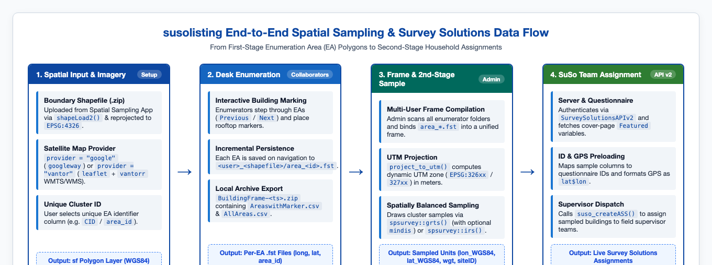
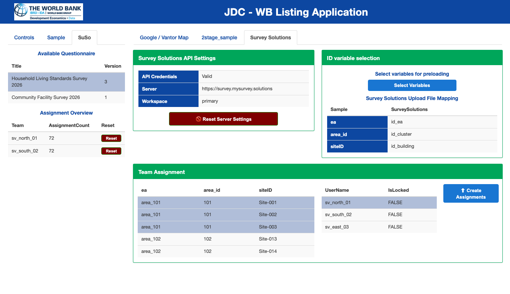

3. Data Flow: From Building Listing to Survey Solutions Assignment
Source:vignettes/data-flow-and-suso-assignment.Rmd
data-flow-and-suso-assignment.RmdEnd-to-End Architecture
susolisting bridges spatial sampling and CAPI field
operations by connecting first-stage Enumeration Area (EA)
boundary shapefiles, desk enumeration on
high-resolution satellite imagery, second-stage
spatially balanced sampling (spsurvey), and
automated Survey Solutions assignment creation
(SurveySolutionsAPIv2).

End-to-end data flow across the four stages of the susolisting workflow.
Stage-by-Stage Data Pipeline
Stage 1: Spatial Boundary Input & Satellite Map Initialization
| Component | Function / Object | Input Format | Output / State |
|---|---|---|---|
| Provider Resolution | resolve_map_provider() |
provider = "google" or
"vantor" ("maxar") |
Sets
options(susolisting.provider = ...)
|
| Coverage Grid Resolution | resolve_n_grid() |
n_grid = 10L (default 10 x 10
grid) |
Sets
options(susolisting.n_grid = ...)
|
| Boundary Upload | shapeLoad2() |
.zip containing .shp,
.shx, .dbf, .prj
|
sf polygon object transformed to
EPSG:4326 (boundaryFile()) |
| Cluster Identifier | areaIDs() |
User-selected column (input$area_id) |
Validated vector of unique EA identifiers |
| Map Canvas |
googleway::google_map() or
leaflet::leaflet() +
vantorr::add_vantor_basemap()
|
Google API key or Vantor WMTS/WMS API key | Interactive satellite map zoomed to
lgaSel()
|
Stage 2: Building Enumeration, Spatial Coverage Check &
Incremental .fst Persistence
As an enumerator clicks building rooftops inside the active EA
boundary (lgaSel()), the browser’s custom drawing handler
(suso_drawing_js()) places a marker and emits
input$detailSampMap_markercomplete:
-
In-Memory Collector (
pointsCollectorGoogle()): Accumulates newly placed markers for the active Enumeration Area in adata.table:long (numeric) | lat (numeric) | area_id (character) -
Spatial Grid Coverage Check (
calculate_polygon_coverage()): Whenever the enumerator clicks Next (input$loadNextEA) or Download Locations (input$downloadActivate),persist_area_points()evaluates the spatial distribution of saved points across the active EA polygon (lgaSel()):- Both the polygon and the collected building coordinates are
projected into planar UTM meters via
project_to_utm(). - An
n_grid x n_gridregular spatial grid (10 x 10cells by default, configured vian_grid) is generated over the polygon withsf::st_make_grid()and filtered to the grid cells that intersect the polygon interior (sf::st_intersects()). - The coverage percentage is computed from the number of polygon grid cells that contain at least one listed building:
- Polygons with
< 20%spatial coverage are flagged (coverage_status = "LOW",low_coverage = TRUE), triggering a warning notification in the UI and highlighting the cluster status in bold red in the sidebar AreaSummary table (ID,Listed Units,Coverage,Status).
- Both the polygon and the collected building coordinates are
projected into planar UTM meters via
-
On-Disk Persistence (
persist_area_points()): The merged building coordinates and coverage attributes (long,lat,area_id,coverage_pct,coverage_status) are written to disk in fast binary.fstformat:<app_download_dir>/<sanitized_user>_<shapefile_name>/area_<clean_id>.fst Individual Archive Export (
BuildingFrame-<timestamp>.zip): When downloaded in local mode, the.fstfiles are combined intoAreaswithMarker-<timestamp>.csvalongside the polygon attribute tableAllAreas-<timestamp>.csv.
Stage 3: Multi-Enumerator Frame Compilation & Second-Stage Sampling
In administrator mode (modal_adminspsample_server() and
modal_spsample2stage_server()):
-
Frame Compilation & Coverage Backfilling
(
dt_frame()&summarize_cluster_coverage()): Allarea_*.fstfiles across all<user>_<shapefile>folders are read and bound viadata.table::rbindlist(..., idcol = "ea", fill = TRUE), sorted byc("ea", "long", "lat"). If any legacy.fstfiles lackcoverage_pct,calculate_polygon_coverage(polygon_sf = NULL, ...)automatically backfills coverage using a buffered convex hull of the cluster’s points. Cluster-level coverage is aggregated viasummarize_cluster_coverage()and displayed in the Frame Summary table (Average Area Coverage (%)andLow-Coverage Segments (<20%)). -
Dynamic UTM Projection
(
project_to_utm()): Before callingspsurvey, the WGS84 point frame is converted to ansfobject and dynamically projected into the appropriate Universal Transverse Mercator (UTM) zone in meters: producingEPSG:326xx(Northern Hemisphere) orEPSG:327xx(Southern Hemisphere). This ensures that spatial balance and minimum distance constraints (mindisin meters) are computed on planar metric coordinates. -
Sample Selection (
spsurvey::grts()/spsurvey::irs()): For each stratum (cluster), the target sample size is capped at the cluster’s building count (). The resultingsites_basesfobject is transformed back toEPSG:4326(sampleData()), containing:-
siteID: Unique sampled unit identifier generated byspsurvey -
eaandarea_id: Cluster identifiers -
lon_WGS84,lat_WGS84: Geographic coordinates in decimal degrees -
wgt: Design weight ()
-
-
Automated Word Sampling Report
(
sampling_report_server()/build_sampling_report_docx()): Alongside the zipped CSV sample download, the sampling module provides a dedicatedofficer-powered reporting module (R/shiny_sampling_report_module.R) that generates a World Bank Group-styled.docxreport documenting the frame, spatial grid coverage diagnostics and low-coverage cluster alerts, the spatial sampling process and parameters, and the resulting cluster-level sample and coverage tables.
Stage 4: Survey Solutions Variable Mapping & Supervisor Assignment
In the SuSo tab (mapadminSRV_st2()),
the sampled building units are linked directly to a live Survey
Solutions server via SurveySolutionsAPIv2:

Survey Solutions assignment interface showing API connection status, cover-page variable mapping, and supervisor team assignment tables.
-
Server Authentication & Questionnaire
Structure:
-
SurveySolutionsAPIv2::suso_set_key()andSurveySolutionsAPIv2::suso_PwCheck()validate the server URL, workspace, API user, and password. -
SurveySolutionsAPIv2::suso_getQuestDetails()retrieves the list of imported questionnaires. Selecting a questionnaire fetches its JSON structure (operation.type = "structure") and extracts all cover-page identifying variables (Featured == TRUE):- Non-GPS variables (
IDVARS()) for preloading cluster/building IDs. - The featured
GpsCoordinateQuestionvariable (GPSVAR()) for preloading building coordinates.
- Non-GPS variables (
-
-
Interactive Variable Mapping
(
suso_map_idSRV()):- Clicking Select Variables opens a modal where the
administrator maps sample columns (e.g.,
ea,area_id,siteID) to the corresponding Survey Solutions cover-page variables (e.g.,id_ea,id_cluster,id_building). - The
lon_WGS84andlat_WGS84columns are automatically formatted into Survey Solutions’ GPS preload string ("<lat>$<lon>"rounded to 8 decimal places) and bound toGPSVAR().
- Clicking Select Variables opens a modal where the
administrator maps sample columns (e.g.,
-
Supervisor Team Dispatch
(
suso_createASS()):- The administrator selects one or more sampled buildings (or
clusters) in the left table (
assignTable), selects a field supervisor in the right table (teamTable, populated viaSurveySolutionsAPIv2::suso_getSV()), and clicks Create Assignments. -
susolistingiterates over the selected units and callsSurveySolutionsAPIv2::suso_createASS()for each sampled building, assigning it toResponsibleNamewith preloaded ID and GPS coordinates. - The Assignment Overview table in the left sidebar logs the number of assignments created per team and provides a confirmation-protected Reset button.
- The administrator selects one or more sampled buildings (or
clusters) in the left table (